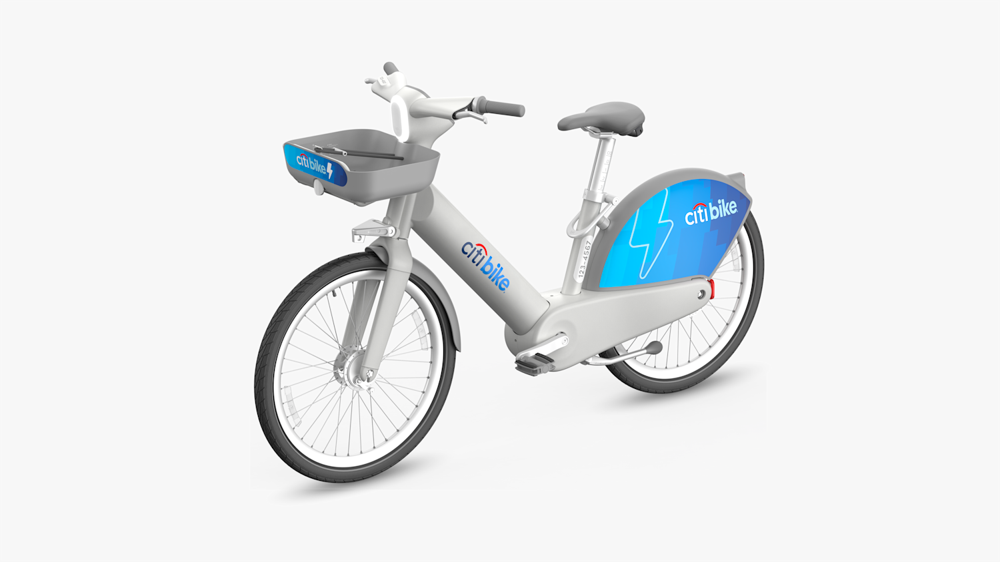

Vibe Coding is an E-Bike for the Mind

After a month of using Claude Code it feels like the perfect metaphor for vibe coding is riding an ebike.
New York City's bike sharing system, Citi Bike, has a big fleet of gray electric bikes. On one hand these are great. They democratize cycling to the point that even the unathletic with no cycling experience can participate. As a cyclist who desperately wants the city's transportation infrastructure to be more bicycle-friendly, this is a good thing. On the other hand, it turns out that giving people with no cycling experience (and often no driving experience) access to an electric vehicle isn't very safe. As a cyclist who cares about my safety and the safety of others, this actually kind of sucks. What initially felt like the democratization of cycling turned into a bunch of drunk 20-something finance bros without helmets zooming in and out of traffic.
My big theory on this is: When you're riding an ebike you don't realize how fast you're going because you're not putting in the work. If I'm pedaling at 18mph on my road bike then I'm moving parts of my body fast, I'm locked in, I'm probably out of breath, and overall it feels like I'm going fast. But if I can go just as fast by simply pressing a button, then it's much easier to tune out my speed and think about something else.
Maybe you see where I'm going with this, but vibe coding feels like it's essentially the same as ebiking. LLM-based coding tools are great. They empower people who don't code to easily and quickly build software that they otherwise would have no way of building. They also let people who do know how to code to move really fast. My initial reaction after using a vibe coding tool for the first time was: "Wow, this is great! Now there's virtually no friction between my ideas and the code! I can't wait to move really fast!" An hour later my code was a total mess and I had no idea what was going on. I opened up my IDE and my reaction turned into "Ugh, who the fuck wrote all this?"
After some trial and error I realized I couldn't just tell Claude "Build this vague feature! Okay, now build this other vague feature!" Even if it implements those ideas well, it becomes really easy to lose sight of what you're actually building. When you don't actually do the work, you move so fast that you can lose your mental model of how the system works. When I switched back to manually coding things, I realized that actually going through the motions of writing the code forced me to move at the same speed as my ability to understand what was going on.
Overall, I'm optimistic that I can learn to strike a good balance. As many others have pointed out, the productivity gains of vibe coding are too great to ignore. Alternatively, I'm not planning on letting my biking muscles atrophy and embracing ebiking. Sure, it might help me get to where I'm going faster, but it would also be a lot less fun.